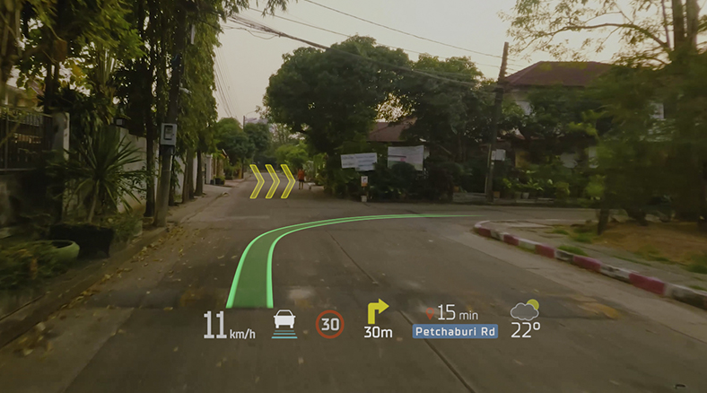
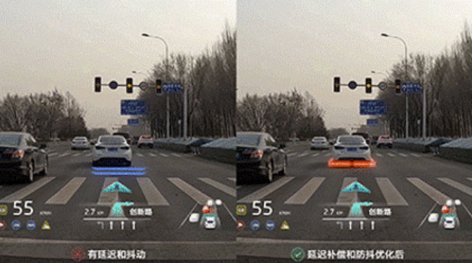
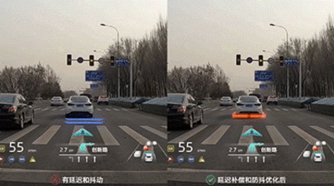
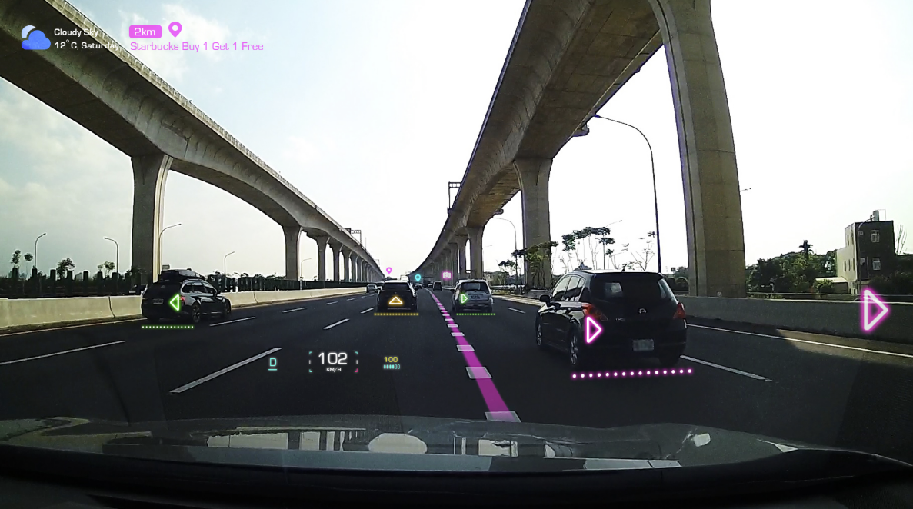
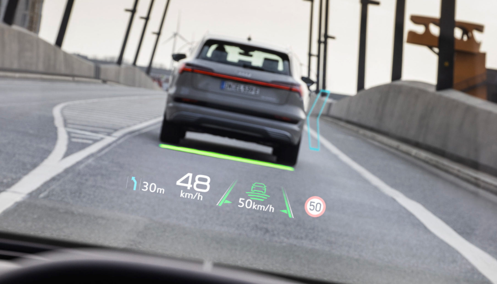
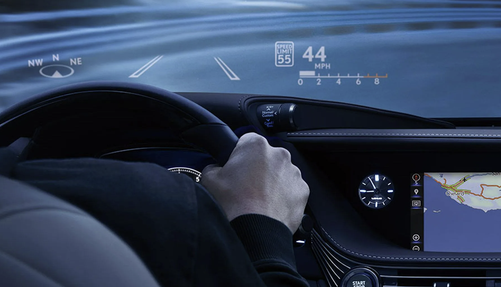

Roxanna's Experinment One-Page Proposal
Varaious Vehicle Interfaces: Designing HUD Systems for Different Environments
Project Proposal
For this semester-long project, I aim to design and develop an interactive vehicle-based navigation experience in Unity that explores how Heads-Up Display (HUD) systems adapt across different environments. The project will combine foundational programming principles from Unity's Junior Programmer Pathway with my ongoing interest in automotive and aerospace interface design, human-machine interaction, and immersive UX. 🧺🌳

The core premise is simple: the user navigates through different environments while operating a vehicle designed for that terrain. However, the focus of the project is not solely on vehicle movement, but on how interface systems evolve depending on context. For example, navigating a paved roadway in a car requires different visual and auditory information than driving a rover across the lunar surface or remotely operating a robot through a cave tunnel. Each scenario presents distinct environmental constraints, levels of risk, and informational needs.
 

This project will center around two experiments:
Experiment 1: Adaptive HUD Systems
This experiment investigates how visual interface systems respond to environmental change. I will design multiple HUD variations tailored to different terrains and vehicle types. The goal is to explore how information density, placement, motion, and transparency affect usability and immersion

Experiment 2: Still figuring out what this will be.
Overall, this project will serve as a study in interface design within mobility systems and reflects my interest in designing for automotive and aerospace environments, where clarity, adaptability, and real-time feedback are critical. Additionally, this will be a great opportunity for me to start building necessary assets and seeing what is feasible for my thesis project for next semester. By combining these Unity and C++ fundamentals with interface experimentation, I hope my work can better explore the implementation and benefits of immersive displays for various vehicle systems.
